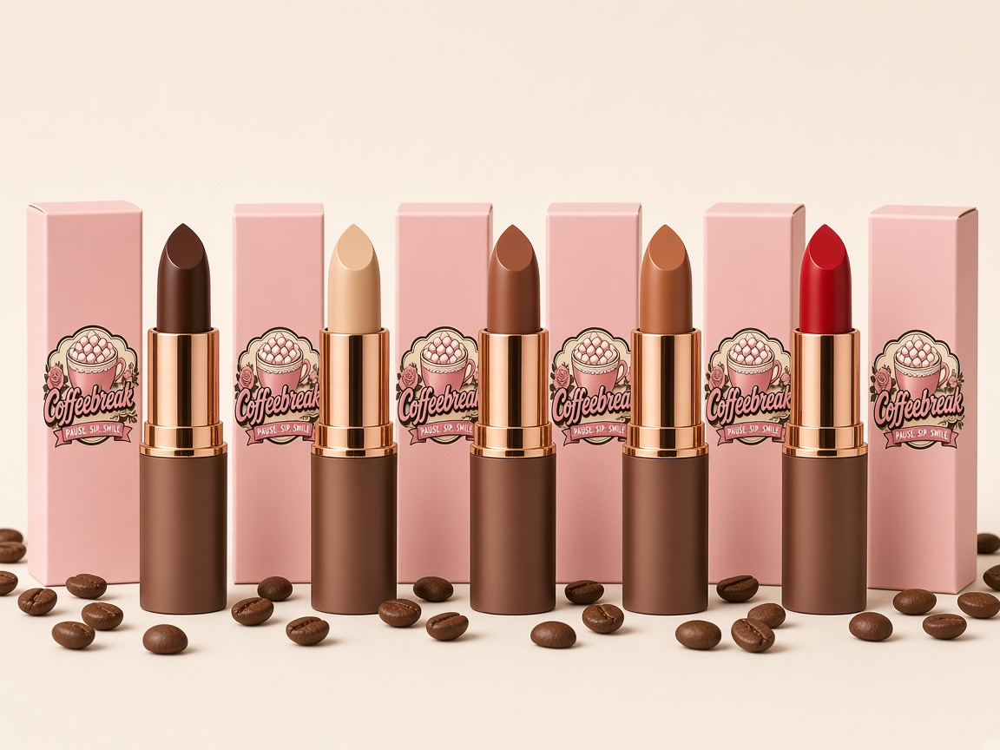
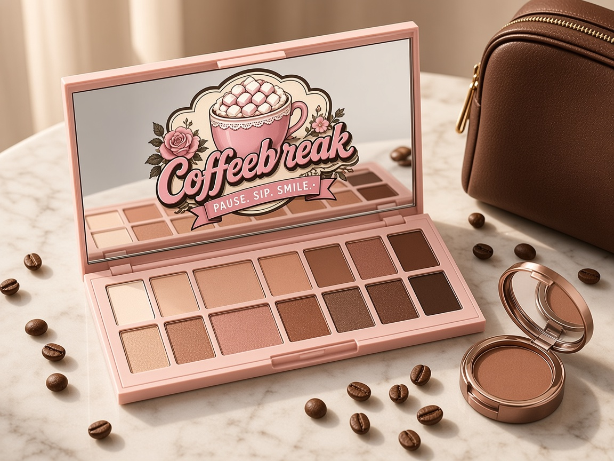
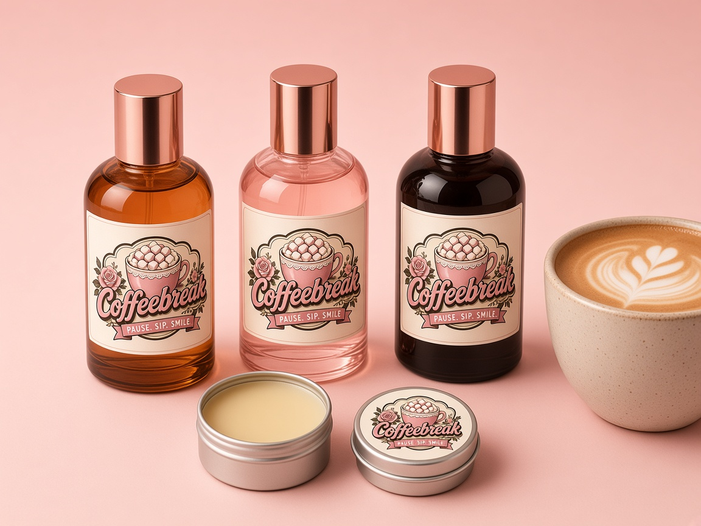

Coffeebreak Makeup
A coffee-inspired makeup and fragrance range concept

Prepared for a proposed Kmart Australia wholesale range. November 2026.
Coffeebreak is Karen O'Brien, a songwriter and creator from Newcastle NSW. She makes apps, games, stores, tattoo flash, fashion and music under the Coffeebreak name.
Concept document. Pictures are concept mockups, not photos of finished products. Formulas, shades and prices are proposals and estimates only, and no product here has been manufactured, tested or approved for sale. Kmart is named only as a proposed retail partner; no agreement exists.
The idea
Coffeebreak Makeup turns the colours of a café menu into everyday makeup: espresso, latte, mocha, caramel and a cherry red inspired by the 1940s pin-up look. Every product carries the Coffeebreak logo and a warm coffee-brown, cream and gold pack design.
- Hero story: coffee shades and coffee-scented formulas (coffee butter, coffee-derived pigment, fine coffee grounds in the scrub), subject to manufacturer formulation.
- Audience: shoppers aged 16 to 35 who like café culture, vintage pin-up style and giftable beauty.
- Price position: value pricing for a mass retailer (see the proposed Kmart RRPs, which are estimates).
- Brand link: the range ties in with Coffeebreak fashion, tattoo flash, music and apps at https://coffeebreaks.itch.io.
Lip shades

The range (20 products)
Current pre-order prices from the Coffeebreak Makeup and Fragrance store, next to proposed mass-retail RRPs for a Kmart range. All Kmart figures are estimates for discussion only.
| Category | Product | Coffeebreak store price | Proposed Kmart RRP (estimate) |
|---|
| Lip | Espresso Matte Lipstick | AU$24 | AU$9 |
| Lip | Latte Satin Lipstick | AU$24 | AU$9 |
| Lip | Mocha Cream Lipstick | AU$24 | AU$9 |
| Lip | Caramel Gloss Lipstick | AU$24 | AU$9 |
| Lip | Cherry Red Pin-Up Lipstick | AU$26 | AU$10 |
| Lip | Vanilla Latte Lip Balm 10g | AU$12 | AU$5 |
| Lip | Coffee Ground Lip Scrub 15g | AU$14 | AU$6 |
| Eye | Coffee Eyeshadow Palette (10 shades) | AU$45 | AU$15 |
| Eye | Coffee Brow Powder and Lash Duo | AU$29 | AU$12 |
| Face | Setting Spray 100ml | AU$24 | AU$10 |
| Nails | Red Nail Polish 12ml | AU$16 | AU$5 |
| Tools | Five Piece Makeup Brush Set | AU$39 | AU$12 |
| Tools | Coffeebreak Makeup Bag | AU$22 | AU$10 |
| Fragrance | Espresso Noir Eau de Parfum 50ml | AU$69 | AU$20 |
| Fragrance | Vanilla Latte Eau de Parfum 50ml | AU$69 | AU$20 |
| Fragrance | Mocha Rose Eau de Parfum 50ml | AU$69 | AU$20 |
| Fragrance | Caramel Macchiato Eau de Parfum 50ml | AU$69 | AU$20 |
| Fragrance | Morning Roast Eau de Parfum 50ml | AU$69 | AU$20 |
| Fragrance | Coffee Body Mist 150ml | AU$29 | AU$10 |
| Fragrance | Solid Perfume Balm 15g | AU$22 | AU$8 |
Fragrance

Five eau de parfum concepts: Espresso Noir, Vanilla Latte, Mocha Rose, Caramel Macchiato and Morning Roast, plus a body mist and a solid perfume balm. For a value retailer, a 30ml size at about AU$15 to AU$20 RRP (estimate) may suit better than 50ml.
Packaging
- Coffee-brown outer carton with cream lettering and the Coffeebreak logo in gold.
- Lipstick tubes in matte brown with a gold band; palette with a mirror and coffee-bean emboss.
- Recyclable card where possible, with full ingredients on the outer pack.
Path to shelf (what would have to happen)
- Choose a contract cosmetics manufacturer that can formulate, fill and pack the range (private label).
- Formulate and stability-test each product; get safety assessments from the manufacturer.
- The Australian importer or manufacturer registers with AICIS (Australian Industrial Chemicals Introduction Scheme) for the chemicals introduced.
- Label to the Australian cosmetics ingredient labelling standard, enforced by the ACCC (full ingredient list on the pack).
- Keep claims cosmetic only: no therapeutic or medical claims, so the products stay outside TGA rules.
- Meet Kmart Group's Ethical Sourcing Code and factory registration, which Kmart sourcing teams start when they onboard a new supplier.
- Agree minimum order quantities, cost prices, delivery terms and product liability insurance before any order.
Estimate only: a first private-label run is often priced per unit at a minimum order quantity in the thousands per shade. Real quotes must come from manufacturers.
Contact
Karen O'Brien (Coffeebreak), Newcastle NSW. Store: https://coffeebreaks.itch.io/coffeebreak-makeup
Free for now. Enjoying this app? ☕ Send Karen a coffee tip by PayID darkokaz@gmx.com (Teachers Mutual Bank). Put the app name in the reference.